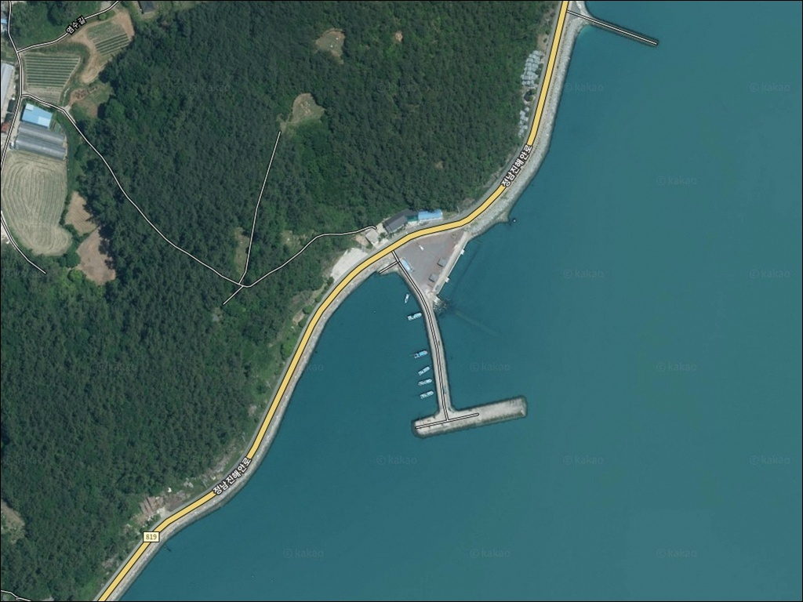
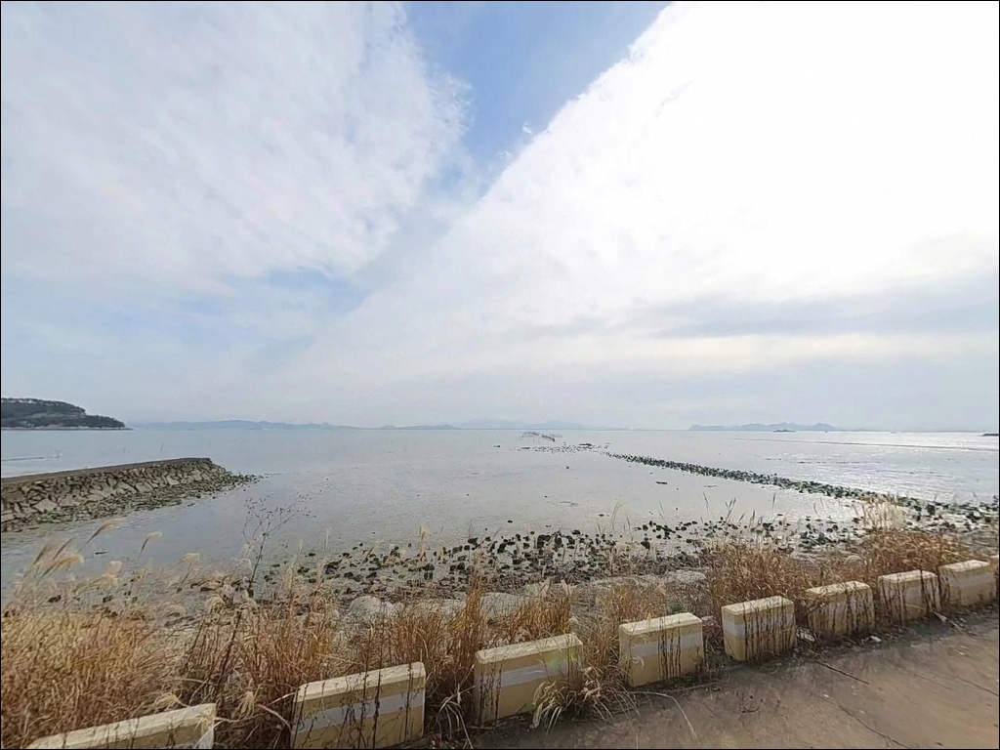
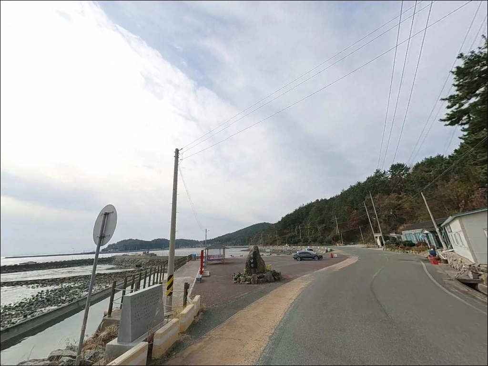
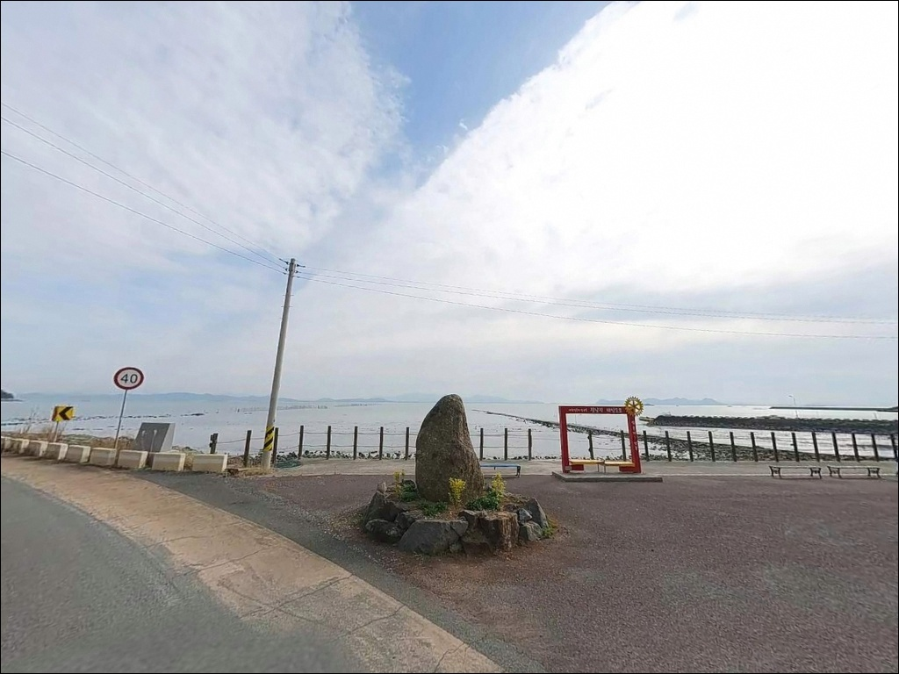
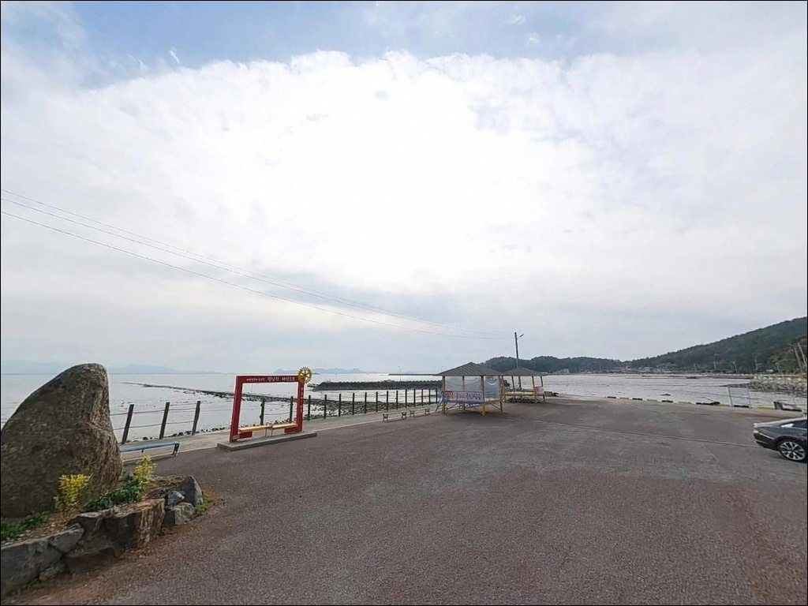
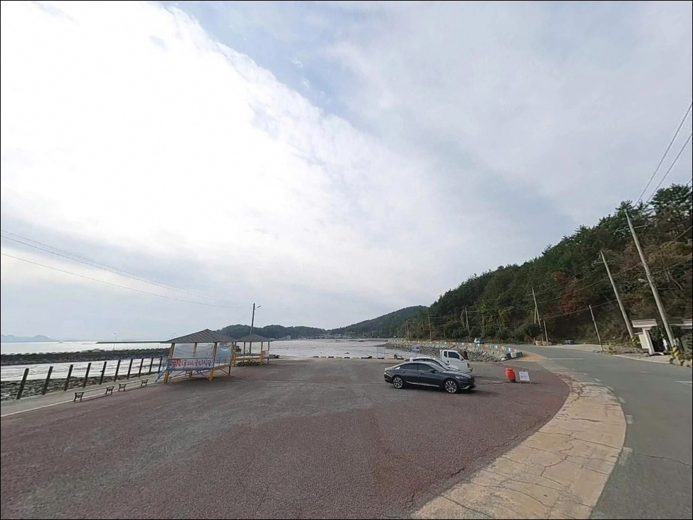
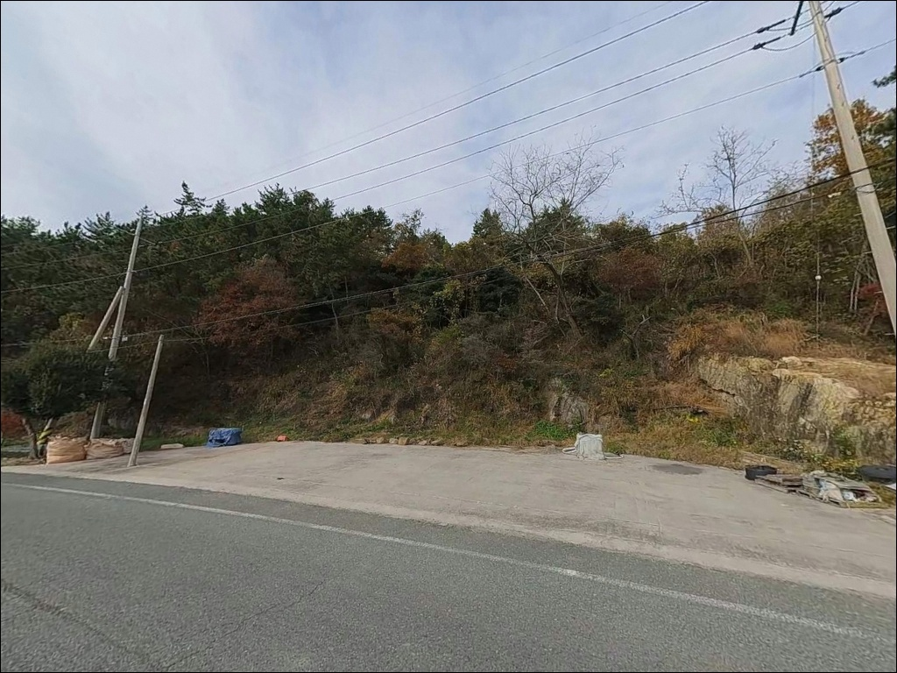
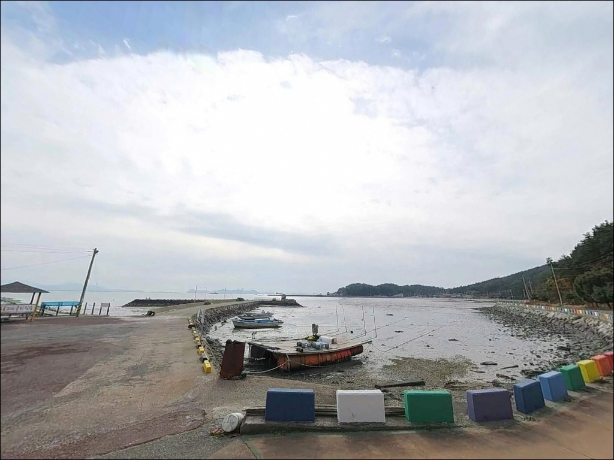
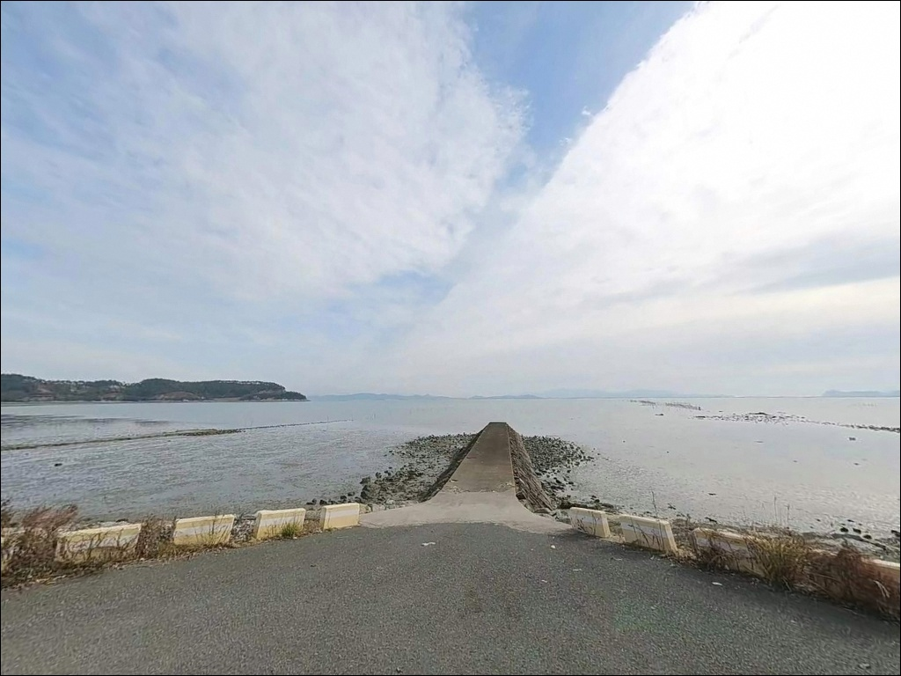

신동리방파제, 전남 장흥군 조과 좋은 유명 바다 차박 낚시터 스팟


포인트 안내
신동리방파제
전남 장흥군 관산읍 신동리 25-2
물때 확인 없이 이 포인트에 들어서면
간조 시 바닥이 훤히 드러나는 내만형 구조 특성상
채비를 펼칠 수심 자체가 확보되지 않습니다.
어떤 채비를 써도 조류가 멈춘 자리에서는
반응을 기대하기 어렵습니다.
만조 전후 2시간을 중심으로 출조 시각을 맞추는 것이
이 포인트를 제대로 쓰는 방법입니다.
신동리방파제는 장흥 정남진 해안로와 인접한
소형 방파제로, 득량만 내해를 직접 마주하는 구조입니다.
공식 어항으로 등록된 대형 항구가 아닌
마을 단위 소규모 시설이며,
온라인 조황 정보가 많지 않은 조용한 포인트입니다.
이 글은
신동리방파제의 진입 환경, 차박 여건,
낚시 방식 적합성과 물때 판단 기준에 집중합니다.
조황 단정이나 특정 어종 보장은
이 글의 범위에 포함되지 않습니다.

1. 진입 동선과 포인트 접근성
관산읍 시가지에서 정남진해안로를 타고 남쪽으로 내려오면
신동리 마을 안길과 연결되는 구조입니다.
해안도로 특성상 진입로는 대부분 포장되어 있으며
급경사 구간 없이 평탄한 해안로가 방파제까지 이어집니다.
마을 안길 구간은 1차선~1.5차선 수준의 좁은 도로이며,
소형~중형 차량은 무리 없이 진입할 수 있는 편입니다.
대형 SUV나 캠핑카급 차량이라면
진입 전 마을 안길 폭을 위성지도로
미리 확인하고 가는 것이 안전합니다.
방파제 입구 앞 공터에 차량 3~5대 정도 주차할 수 있는
평탄한 공간이 확보되어 있습니다.
낚시 자리와 거리가 가까워 장비 이동이 편리하고,
어선 출입 시간대 외에는 차량 통행이 많지 않습니다.

2. 차박 환경과 야간 체류 여건
신동리는 인구가 적은 소규모 어촌 마을입니다.
야간에는 차량 통행이 거의 없으며,
방파제 공터 주변은 개방된 공간이라
프라이버시는 어느 정도 확보되는 환경입니다.
가로등은 마을 도로변 중심으로 배치되어 있고,
방파제 끝단으로 갈수록 어두워지는 구조이므로
개인 조명 장비는 필수입니다.
득량만 내해 깊숙이 위치한 지형 특성상
외항 직격의 거센 파도는 없고
수면이 비교적 잔잔한 편입니다.
낚시를 마치고 조용히 하룻밤 머무는 용도로는
적합한 구조이나,
민가와 가까운 포인트이므로 야간 소음 관리가 기본 매너입니다.
외항 방향이 남서~남동쪽으로 열려 있어
해당 방향에서 바람이 강하게 불 때는
체류 환경이 불편해질 수 있습니다.
출발 전 기상청 예보에서 풍향과 풍속을
함께 확인해두는 것이 좋습니다.


3. 주변 편의시설 및 인프라 현황
방파제 인근에는 별도의 편의점이나 식당이 없습니다.
기본적인 생활 인프라는 관산읍 시가지 방향으로
차로 약 5분 거리에 위치합니다.
편의점, 소형 마트, 식당 모두 이 방향에서
출발 전 미리 해결해두는 구조로 이동하면 됩니다.
정남진 전망대 인근 공원 시설을 이용하면
기본적인 화장실 이용이 가능합니다.
방파제 현장 자체에는 공공 화장실이 없으므로
이 동선을 사전에 파악해두는 편이 좋습니다.
주유소와 응급 관련 시설은 관산읍 읍내 방향으로
이동해야 합니다.

4. 만조 타이밍을 알아야 이 포인트가 열립니다
신동리방파제 방문 전에 가장 먼저 확인할 것은
물때입니다.
내만형 얕은 수심 구조는 간조 시 바닥이 드러나는 경우가 있어
낚시 자체가 불가능한 상황이 됩니다.
바다타임에서 장흥 관산 기준 물때를 확인하고
만조 전후 2시간을 중심으로 출발 시각을 맞추는 것이
이 포인트의 기본 전략입니다.
마을 선착장 기능을 겸하는 소형 방파제이므로
어선 출입 동선을 막지 않는 자리를 먼저 확인해야 합니다.
채비는 뻘 혼합 바닥 특성상 밑걸림이 생길 수 있으니
여분 채비를 넉넉히 준비하는 편이 좋습니다.
야간 낚시를 계획한다면 헤드랜턴과 구명조끼를
반드시 챙겨야 합니다.
장흥군은 최근 수년간 득량만 해역에
감성돔 치어를 지속적으로 방류해온 해역으로,
이 해역의 어종 다양성은 공식적으로 관리되고 있습니다.
출조 전 관산읍 일대 최신 조황을 검색해보시기 바랍니다.

5. 지형 기반 낚시 여건 분석
신동리방파제는 득량만 내해를 직접 향하는
소형 직선형 방파제 구조입니다.
내항은 마을 선착장 기능을 겸한 잔잔한 수면이고,
외항 전면은 득량만 수역이 열려 있는 형태입니다.
방파제 끝단이 유일한 수심 변화 구간으로,
이 지점이 낚시 자리로 가장 유효합니다.
바닥은 득량만 내해 전형적인 펄과 패각이 섞인
혼합 지형입니다.
수심은 전체적으로 얕은 편이며,
방파제 끝단에서 외항 방향으로 캐스팅할 때
수심이 어느 정도 형성되는 구조입니다.
조류는 강한 직선 흐름보다는
들물과 썰물 전환 시점의 완만한 흐름이 위주입니다.
이 지형에서 기대해볼 수 있는 어종은
감성돔, 붕장어, 보리멸, 숭어, 볼락류 등입니다.
득량만은 장흥군이 감성돔 치어를 방류해온 해역으로
봄~가을 시즌에 어종 다양성이 높아지는 경향이 있습니다.
출조 전에 장흥 득량만 일대 조황을
꼭 검색해 보시기 바랍니다.
방파제 끝단에서 외항 방향으로 중거리 캐스팅하는 것이
이 포인트의 핵심 공략 구간입니다.
장타보다 끝단 전방 20~40m 구간에서
채비를 안정시키는 방식이 이 지형에 맞습니다.


6. 포인트에 어울리는 낚시 스타일
이 포인트에서 가장 잘 맞는 낚시는
원투낚시입니다.
펄 혼합 바닥 구조는 원투 채비가 힘을 발휘하는
전형적인 조건이며,
방파제 끝단에서 외항 방향으로 캐스팅한 뒤
중거리 탐색 위주로 운용하는 방식이 효율적입니다.
밑걸림이 적어 채비 손실 부담이 낮습니다.
에깅도 이 포인트에서 시도해볼 만한 낚시 방식입니다.
가을철에는 갑오징어와 주꾸미가
내만 얕은 구간까지 들어오는 경향이 있으며,
방파제 끝단에서 외해 방향으로 캐스팅해
바닥을 긁는 방식이 이 지형 조건과 맞습니다.
가을 이후 조황이 살아날 때 병행해볼 수 있습니다.
야간에는 가로등 불빛이 닿는 내항과 외항 경계면에서
찌낚시를 운용하는 방식도 적합합니다.
소형 어종이 집어등 불빛에 모이는 구조를 활용해
방파제 전 구간을 이동하며 탐색하는 방식이
이 포인트 구조에 어울립니다.

7. 대안 포인트와 플랜 B 동선
신동리방파제 조류 여건이 여의치 않거나
주차 공간이 이미 찼을 때는
정남진 해양낚시공원이 첫 번째 대안입니다.
회진면 해안에 위치하며 신동리에서 차로 약 15분 거리이고,
데크형 바다낚시 시설을 갖추고 있어
안전 환경이 확보된 상태에서 낚시를 즐길 수 있습니다.
수~일 주 5일 운영하므로 방문 전 운영일 확인이 필요합니다.
더 깊은 수심과 넓은 방파제를 원한다면
회진항 방파제가 적합합니다.
신동리에서 차로 약 15~20분 거리이며,
동일 득량만 해역 내에서 수심과 어종 다양성이
신동리보다 풍부한 편입니다.
원투, 루어, 에깅 모두 운용이 가능한 구조입니다.
같은 정남진 해안선을 따라 분포한
삼산방조제 및 동두항 방파제 방향도
대체 포인트로 활용할 수 있습니다.
주차 공간이 상대적으로 넉넉하고
해안 경관도 좋아
차박 연계 거점으로 활용도가 높습니다.

물때 맞으면 조용한 포인트,
놓치면 드라이브만 하고 옵니다
원투낚시나 가을 에깅을 즐기는 낚시인이라면
신동리방파제의 지형 조건은
잘 맞는 구조입니다.
온라인에 조황 기록이 거의 없어
직접 답사해두면 좋은 조용한 내만형 포인트이며,
관산읍 시가지와 가까워
인프라 접근 부담이 낮은 것도 장점입니다.
반면 물때 계산 없이 간조 시간대에 도착하거나
바람이 강한 날 외항 방향에 자리를 잡으면
낚시 환경 자체가 불편해집니다.
물때 확인, 만조 타이밍 계산, 위성지도 진입로 확인,
이 세 가지를 준비하고 간다면
조용한 어촌 방파제에서의 낚시와 차박을
함께 즐길 수 있는 포인트입니다.